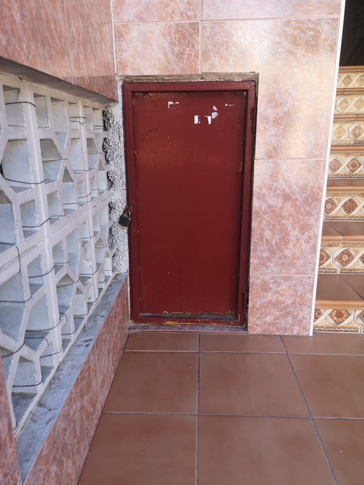
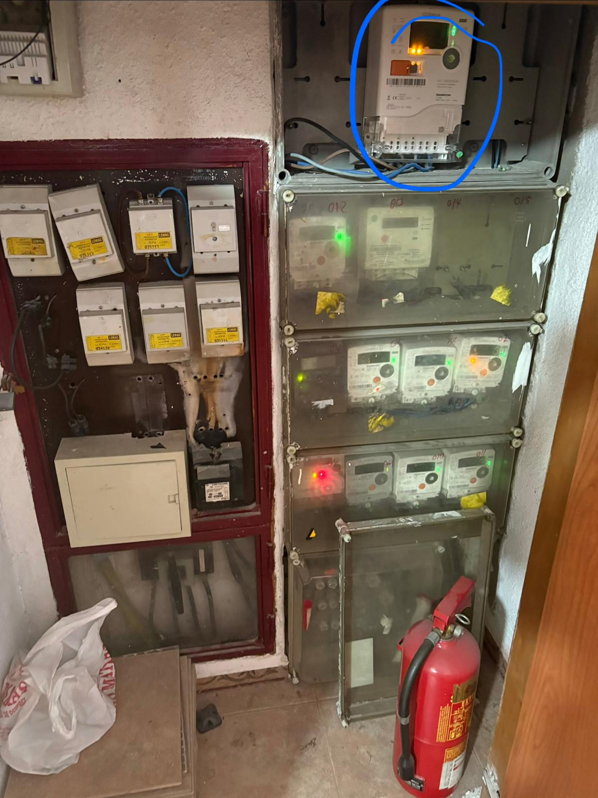
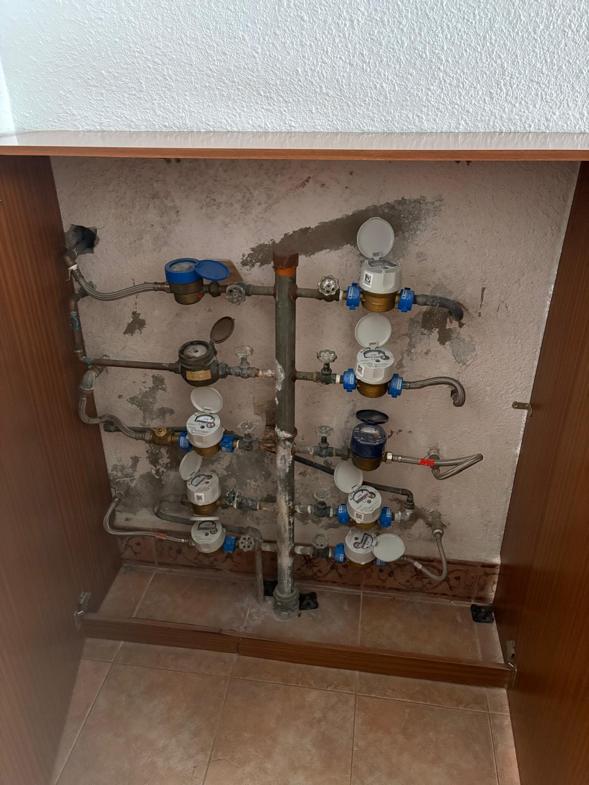

Las Torres de Cotillas
Una operación de Cambio de Uso con la viabilidad cerrada y certificada, la demanda medida dos veces sobre el terreno y un equipo que la ejecuta de principio a fin.
Metodología propia repartida en 3 fases —
GO→
MAP→
ÉXITO — y un objetivo claro: pasar de la viabilidad al beneficio real.
Sin improvisar. Sin sorpresas.
Tres perfiles diferentes. Mismos estándares.
Un objetivo: el Resultado.
Esto no va solo de un método — va de un equipo humano completo, encajado como un puzzle: tres energías que se complementan.
 PacoControl
PacoControl DaniEjecución
DaniEjecuciónLa toma de tierra del proyecto. El cerebro analítico que estudia cada camino y elige el mejor; números y documentos reales, sin suposiciones. Hace controlables las variables que no lo parecen.
La visión creativa del proyecto: leer hacia dónde va el mercado y qué necesita. Marketing y claridad para convertir la idea en algo palpable — y la IA como palanca para escalar al siguiente nivel.
La acción: ejecuta la obra y la parte técnico-jurídica. Sabe qué toca en cada gestión y con cada ente oficial. Mucho oficio de obra; cercano, resuelve y suma. Pieza clave.
Lo que ya hemos hecho — la prueba antes de la promesa
No hablamos en futuro: tenemos operaciones cerradas y en marcha que demuestran que el método llega hasta el resultado real. Estos son los números.
Cambio de uso (local → viviendas)
| Operación | Inversión | Venta | Rentabilidad | Anualizada | Estado |
|---|---|---|---|---|---|
| CdU · 2 viviendas · C/ Diego Fuentes Serrano (Elche) | 140.000 € | 220.000 € | ROI 57% | 68% anual | Finalizada · Hilo en Discord |
| CdU · 4 viviendas · C/ Capitán Alfonso Vives (Elche) | 330.000 € | 473.000 € | ROI 52% | 48% anual | Finalizada (pendiente de cierre) |
| CdU · 13 viviendas (San Vicente del Raspeig) | 930.000 € | 1.640.000 € | ROI 76% | 38% anual | En obra (fase final) |
| CdU · 1 vivienda (Elche, Raval) | 160.000 € | 220.000 € | ROI 37,5% | 45% anual | En marcha |
Comprar, aportar valor y vender
| Operación | Inversión | Venta | Rentabilidad | Anualizada (plazo) | Estado |
|---|---|---|---|---|---|
| C/AV/V · Tríplex · C/ Boquera Calvarí (Crevillente) | 149.026 € | 185.000 € | ROI 24% · ROE 45,5% | 27,4% anual (10,5 meses) | Finalizada · Hilo en Discord |
| C/AV/V · Piso · C/ Juan Ramón Jiménez (Elche) | 45.000 € | 118.000 € | ROI 44% | 53% anual (10 meses) | Finalizada · Detalles en el perfil del gestor |
| C/AV/V · Piso · C/ Bahamas (Orihuela Costa) | 38.480 € | 76.500 € | ROI 60% | 144% anual (5 meses) | Finalizada · Detalles en el perfil del gestor |
| C/AV/V · Piso · Av. Alcalde Ramón Pastor 12 (Elche) | 216.000 € | 270.000 € | ROI 25% | 49,9% anual | Finalizada · Hilo en Discord |
| C/AV/V · Piso · C/ Churruca, La Veleta (Torrevieja) | 65.836 € | Objetivo ~145.000 € | ROI objetivo ~120% | — | En venta |
Comprar, aportar valor y alquilar
| Operación | Inversión | Renta mensual | Notas | Estado |
|---|---|---|---|---|
| C/AV/A · Dúplex · C/ Joan Maragall (Sant Pere de Ribes, Barcelona) | ~167.000 € | 830 €/mes | Rentabilidad infinita — operación financiada al 100%, sin capital propio inmovilizado · Valor potencial de venta ~255.000 € | Alquilada |
El diagnóstico de viabilidad
Antes de mover capital, comprobamos que la operación se puede hacer. Aquí está lo que medimos en el mercado, el activo del que partimos y los cuatro ejes que la sostienen — con el Informe de Diagnóstico como prueba.
El mercado, medido — no opinado
Todo empieza por una pregunta: ¿hay demanda real para el producto que vamos a crear? La medimos con datos, no con intuición — con IM·PULSO, nuestra inteligencia de mercado.
El precio de salida lo afinamos en la Fase 2; aquí basta una estimación orientativa apoyada en datos reales de mercado (vía IM·PULSO), que confirma que hay recorrido para el producto que vamos a crear.
El activo del que partimos
El problema: un municipio de 22.000 habitantes prácticamente sin oferta de vivienda compacta (3-5 pisos en portales) y un local en desuso que la comunidad no quiere como comercial.
La aportación de valor: cambio de uso y reforma integral para crear el producto que el mercado reclama y no existe: vivienda pequeña, reformada, equipada y lista para entrar — en la mejor zona del pueblo.
Dónde está — y por qué importa
| Punto de interés | Distancia |
|---|---|
| Parada de autobús | en la puerta |
| Mercadona · centro de salud · Ayuntamiento | a pie |
| Polígono industrial Molina de Segura | ~10 min |
| Universidad UCAM | ~10 min |
| Estación de ferrocarril | ~14 min |
| Murcia capital | 14 km (~15 min) |
| Arco Norte de Murcia (en licitación) | catalizador: mejora de conexiones del municipio |
Estado original


¿Es viable este cambio de uso?
El veredicto, sin ruleta
La Fase 1 valida cuatro ejes — y si uno falla, falla todo: jurídico/registral, urbanístico, técnico y económico. Se obtiene un veredicto claro (GO / GO con ajustes / NO GO) antes de comprometer un euro.
Los cuatro ejes, cerrados
Validamos los cuatro ejes en esta operación. Los tres riesgos serios que traía —VPO, uso en planta baja y comunidad— quedaron cerrados con certificado. Veredicto: GO.
El informe de viabilidad
Todo el diagnóstico, en un solo documento.
La documentación que usamos para verificar cada eje queda adjunta aquí como prueba de que cada uno está respaldado:
El plan ejecutable
La viabilidad abre la puerta; la ejecución decide el resultado. Aquí convertimos el "sí" en un plan: el encaje técnico al detalle, los suministros, los números por partidas, los escenarios, los riesgos y el calendario de obra.
El proyecto: 3 viviendas que cumplen normativa y cédula de habitabilidad
Convertimos el GO en un plan ejecutable: la viabilidad abre la puerta; la ejecución decide el resultado.
Certificado de la Dirección General de Vivienda: el precio de venta es LIBRE (art. 27 RD 2960/1976). Estatutos: los locales de PB pueden subdividirse con autorización expresa del presidente.
La fachada del local no recae sobre el eje comercial, sino sobre espacio libre privativo. Uso residencial compatible, confirmado por el Ayuntamiento (el certificado se muestra en la Fase 2).
Altura libre, ventilación, salida de humos existente y acometidas son viables sin obstáculos estructurales (estructura NO afectada). El encaje detallado de las 3 viviendas pertenece a la Fase 2.
En el diagnóstico no se afina al euro: se comprueba que la operación sale viable, con una rentabilidad orientativa en el entorno del ~20%. El desglose fino por partidas se trabaja en la Fase 2.
El encaje, al detalle
La Fase 2 toma el "sí cabe" de la Fase 1 y lo convierte en una propuesta funcional concreta: distribución, cotas, instalaciones y cumplimiento normativo — un plan tan detallado que cualquiera puede ejecutarlo sin improvisar.
Proyecto técnico visado
Compatibilidad urbanística confirmada por el Ayuntamiento. Salida de humos existente y CGP en fachada con espacio para los contadores nuevos. Proyecto técnico de cambio de uso, segregación y reforma, visado por arquitecto colegiado.
Estado Licencia de obras en tramitación (~2 meses confirmados por el técnico municipal). Vía de inscripción amparada por estatutos.
El PGMO prohíbe vivienda en PB en Ejes Comerciales — pero la fachada del local no recae sobre el eje, sino sobre espacio libre privativo. Uso residencial COMPATIBLE, certificado oficialmente.
El producto final (visualización · piso piloto)


Triple validación del precio
Método Total (MTVV) con 4 inmobiliarias + verificación de demanda real con ofertas recibidas + cruce con datos masivos y notariado (IM·PULSO). En su último contraste, el motor IM·PULSO replicó el resultado del método manual con un 1,3% de desviación (caso Elda: 74.000 € manual vs 75.000 € motor).
Y en esta operación: el motor IM·PULSO valoró las unidades en 68.000–69.000 € — en línea con los suelos del paso 4 (67.000–72.000 €). Tres vías independientes, un mismo rango.
Agua y luz: previstos y presupuestados
Los suministros son una de las sorpresas clásicas de un cambio de uso. Por eso van en el plan, no en la obra.
Cada vivienda contará con sus suministros independientes. El expediente eléctrico está en gestión y el coste de la acometida de agua ya está presupuestado, de forma que no haya desviaciones imprevistas durante la obra.



Los números, partida a partida
En la Fase 1 vimos que la operación sale viable. Aquí está el desglose fino — la cifra exacta de cada partida.
| Partida | Importe (provisional — en cierre) |
|---|---|
| Compra del local | 40.000 € |
| ITP (7,75%) + notaría + registro + gestoría | ~4.000 € |
| Comisiones (inmobiliaria + cesión inbruto) | ~10.900 € |
| Proyecto, licencias, tasas, AJD, altas suministros | ~12.600 € |
| Reforma (3 presupuestos contrastados: 625–778 €/m² · cálculo prudente 710 €/m² + IVA) | ~90.200 € |
| CGP + contadores + gastos hasta venta + imprevistos | ~4.500 € |
| INVERSIÓN TOTAL DE LA OPERACIÓN | 162.212 € |
Cálculo prudente sobre 3 presupuestos contrastados. Esta es la única vez en toda la presentación que ves el detalle de la inversión total; en la estructura de inversión verás cómo se reparte el capital.
Dos escenarios — y un plan B
El escenario que contamos es el realista, fijado sobre suelos validados tres veces (67K · 72K · IM·PULSO 68-69K) — situado en la franja alta de ese rango ya validado. El optimista es el techo razonable.
| Realista (el que contamos) | Optimista | |
|---|---|---|
| Quién compra | Patrimonialista + 1ª residencia (perfiles ya detectados) | Alta demanda, compra al contado en semanas |
| Venta 3 unidades | 205.000 € (67+67+71) | 220.000 € (75+75+79) |
| Plazo de venta | 30-60 días/unidad | semanas |
| Beneficio (tras servicer 9.000 €) | 33.938 € | 48.938 € |
| Rentabilidad del capital | 20,92% | 30,17% |
Mismo porcentaje para todo el capital — gestor e inversores por igual, en cualquier escenario.
Plan B — la red de seguridad: si la venta se alargara, el activo se sostiene en alquiler tradicional: 350-450 €/mes por unidad validados con 111 contactos → ~8-9% de rentabilidad neta anual. La operación tiene dos salidas: la venta es la principal; el alquiler, la red.
Los riesgos: los que cerramos y los que vigilamos
Esta operación tenía 3 riesgos serios cuando llegó: el VPO, el uso en planta baja y la comunidad. Los tres están cerrados — con certificado (Fase 1). Lo que queda abierto es lo normal de cualquier obra, acotado y con responsable:
| Riesgo | Estado | P×I | Mitigación |
|---|---|---|---|
| VPO — precio de venta | ✅ CERRADO | — | Certificado DGV: precio LIBRE (art. 27 RD 2960/1976) |
| Uso residencial en PB | ✅ CERRADO | — | Certificado de compatibilidad urbanística del Ayuntamiento |
| Comunidad de propietarios | ✅ CERRADO | — | Estatutos + autorización expresa del presidente |
| Licencia: retraso o condiciones | 🟡 VALIDADO | 8 · Medio | Pre-validada con el técnico municipal; proyecto ya presentado; seguimiento activo |
| Sobrecoste en ejecución | 🟡 ACOTADO | 9 · Medio | Cálculo prudente (710 €/m² sobre 3 presupuestos); imprevistos; obra propia = reacción inmediata; cap +15% en CCP |
| CGP / Iberdrola (suministro) | 🟡 ACOTADO | 6 · Bajo | Expediente en gestión; coste acotado y provisionado; presupuesto de aguas en mano |
| Vía registral (segregación vs DH) | 🟡 VALIDADO | 6 · Bajo | Estatutos amparan división; consulta notaría+Registro en curso; ambas vías viables |
| Humedades por capilaridad en solado | 🔴 ABIERTO | 6 · Bajo | Catas previas; impermeabilización desde forjado; estructura NO afectada (inspección) |
Obra: 16 semanas, planificadas capítulo a capítulo
Instalaciones solapadas con albañilería (meses 1-2) para comprimir plazo; acabados concentrados en el mes 4. Suministros: CGP en gestión con Iberdrola; presupuesto de aguas en mano.
Calendario estimado: licencia jul-ago 2026 → obra sep-dic 2026 → cierre de ventas T1 2027.
Del plan al resultado — y cómo entras tú
La Fase 3 lleva el plan al resultado real: obra, comercialización y cierre. Y a continuación, la parte que te toca: la estructura de la inversión, cómo entras, cómo cobras y con qué garantías.
Del plan al resultado real
La realidad se juega en la obra
La Fase 3 ejecuta: dirección de obra por hitos, gestión de proveedores con comparativa de ofertas, MTVV completo y estrategia de salida, control económico con curva S y cierre auditable. Es donde el plan se convierte en beneficio.
Preparada para arrancar
Estudio de mercado y precios ya validados; renders del producto final listos (el paso 4 por CdU). En cuanto entre la licencia, arranca la obra de 16 semanas con el Gantt ya planificado.
Estrategia de salida
Triple suelo del precio: paso 4 (67.000 €) · paso 4 por CdU (72.000 €) · motor IM·PULSO (68.000–69.000 €). El realista que presentamos está construido sobre el suelo, no sobre el deseo.
Posicionamiento: loft/estudio reformado, equipado y listo para entrar — precio accesible, escasez total, doble público (residencial + inversor patrimonialista con alquiler estimado 350-420 €/mes).
Los renders que veis son el paso 4 por CdU — el producto final visualizado por nuestro equipo, no un material de terceros.
DAFO de la operación
- Zona más cara del municipio
- Esquina, 20 m de fachada
- Viabilidad certificada (3 candados cerrados)
- Equipo con ejecución de obra propia
- Producto inexistente: primer mover
- Demanda probada 2 veces
- Arco Norte en licitación
- Escasez estructural de vivienda compacta
- Superficies reducidas (estudios)
- Sin testigos directos de producto similar
- Plazos administrativos (licencia en trámite)
- Sobrecostes de ejecución
- Financiación de algunos compradores (mitigado por precio absoluto bajo)
Quién compra el activo — y cómo entras tú
Quién compra el activo: CdU de 0 a ÉXITO SL compra el local y figura como titular y gestor único frente a terceros. Cómo entras tú: mediante un Contrato de Cuentas en Participación — aportas capital a la operación, sin gestionar y sin aparecer frente a terceros, con tu riesgo limitado estrictamente a tu aportación.
La propuesta: una Joint Venture servicer
En el formato del Programa IN hay dos tipos de Joint Venture: waterfall y servicer. Esta operación es servicer: honorario fijo de gestión + nuestro propio capital al mismo riesgo y misma rentabilidad que el tuyo.
Lo que pedimos
Honorario servicer fijo de 9.000 € por la gestión integral: propuesta, dirección de la aportación de valor y comercialización hasta notaría. Una cifra cerrada y conocida de antemano, descontada del resultado y reflejada en el Excel.
Más un bonus ligado a superar el objetivo: solo cobramos extra si a ti te va mejor de lo previsto.
Lo que ponemos
35.000 € de capital propio dentro de la operación, al mismo riesgo y misma rentabilidad que tú — 20,92% en el realista. Capital simétrico: sin clases de capital, sin rentabilidad asimétrica para el gestor.
Gestión llave en mano + tu cuadro de mandos en vivo desde el día uno.
La fórmula servicer (honorario fijo de mercado + capital simétrico + bonus por superar objetivo) es la doctrina del Programa IN para este tipo de JV — no una invención nuestra.
Cómo entras, cómo cobras — y cómo te blinda
| Aportación | Capital | % del capital | Rentabilidad (realista) |
|---|---|---|---|
| Inversores (partícipes) | 127.212 € | 78,43% | 20,92% |
| Gestor (CdU de 0 a ÉXITO) | 35.000 € | 21,57% | 20,92% |
| Operación | 162.212 € | 100% | 20,92% |
Modelo servicer sobre Cuentas en Participación (arts. 239-243 CCom): todo el capital rinde igual — el del gestor y el de los inversores, al mismo porcentaje (20,92% en el realista; 30,17% en el optimista). Sin clases de capital, sin letra pequeña.
El partícipe: invierte, no gestiona, no aparece frente a terceros, y su riesgo queda limitado estrictamente a su aportación. El gestor: responde frente a terceros, fondos en cuenta exclusiva del proyecto, contabilidad separada, información periódica, derecho de auditoría externa, seguro RC.
Fiscalidad del partícipe: rendimiento del capital mobiliario (19-23%), retención 19% practicada por el gestor.
Cómo te blinda el contrato
El CCP no es un papel de confianza: es un blindaje recíproco que sigue el código de buenas prácticas del Programa IN — protege al partícipe y a la gestora por igual.
Nuestros compromisos contigo
El CCP te blinda jurídicamente. Estos son los compromisos operativos del día a día — cómo trabajamos contigo durante toda la operación.
Nuestra solvencia, documentada
No te pedimos confianza ciega: te la documentamos. La sociedad gestora está al corriente de sus obligaciones y opera con una cuenta exclusiva para la operación.
Y por encima de todo, un compromiso que nadie más en la plataforma te da: verlo tú mismo, casi en tiempo real. 👇
Tu cuadro de mandos — desde el día uno
📊 El visor del partícipe · HERRAMIENTA CdU DE 0 A ÉXITO
Todas nuestras operaciones se siguen así. No es un PDF que envejece: es la operación en vivo.
Acceso privado para partícipes. Demo en vivo durante la presentación.
Toda la documentación, a un clic
Cada documento ya se ha mostrado en la fase a la que pertenece. Este es el índice maestro por si quieres revisarlos todos juntos — se abren aquí mismo, sin salir de la presentación.
Siguiente paso
Si quieres estudiarla a fondo, toda la documentación está aquí a un clic. Si quieres entrar: hablamos 1 a 1 esta semana — los contratos de cuentas en participación se firman por orden de compromiso.
Primero claridad. Luego control. Y al final, resultado.